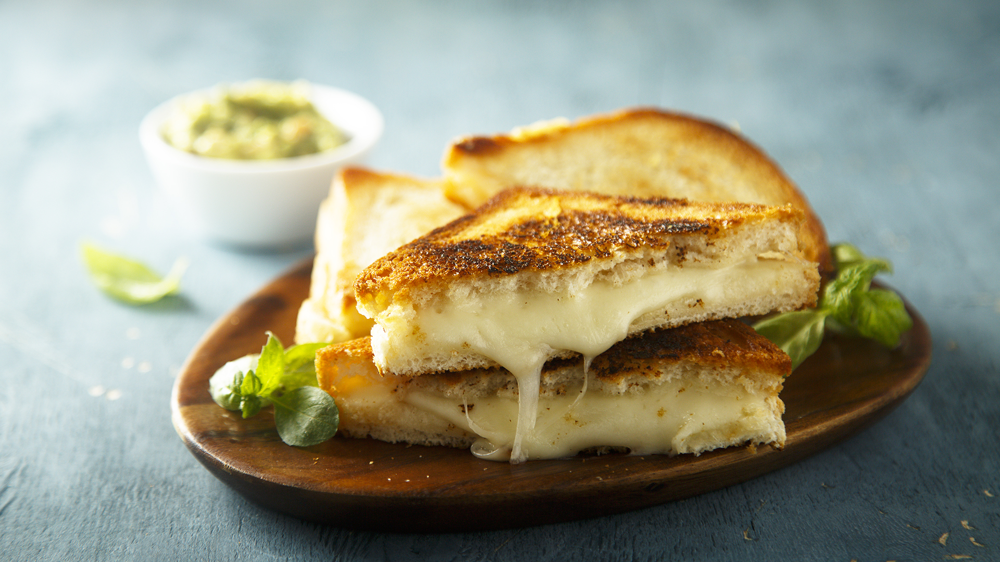

Grilled Cheese

Description
Grilled Cheese is a go to comfort food, great for downer days and picky
eaters
Ingredients
- 2 slices bread (white, sourdough, rye)
- 4 slices cheese (american is best, but anything that melts good
works)
- 2 tablespoons butter or mayo
- Optionally:
- 2 cups spinach
- 1/2 cup thin sliced onions
- 1 cup scrambled eggs
- 4 ounces meat (deli meats, diced bacon, diced ham)
Steps
- cover one side of both slices of bread in butter or mayo
- heat 10-inch skillet to medium high and place bread butter side
down
- once browned, butter other side and flip
- place cheese on bread, ideally cover and wait till melted
- place any optional ingredients, make sure these are cooked first
(especially the spinach)
- press the bread slices together and cut along the diagonal
- serve with tomato soup and a bit of green herb as a garnish